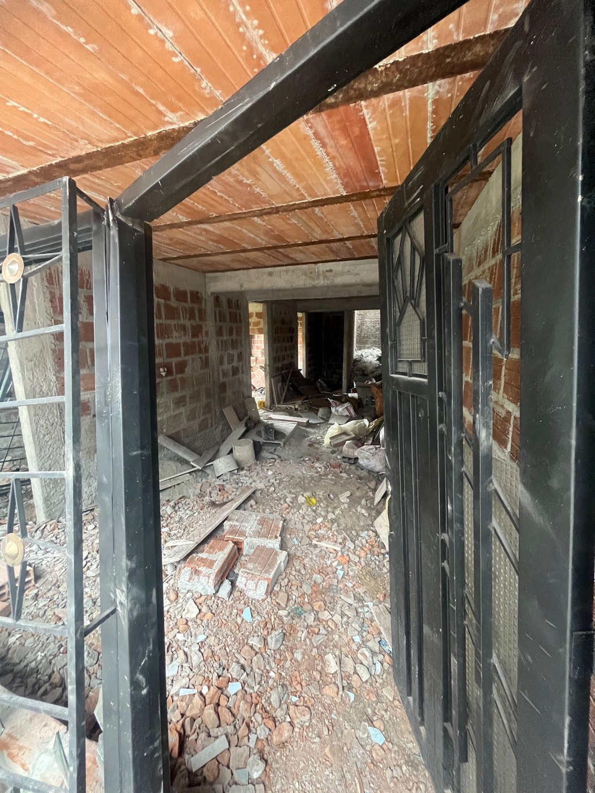
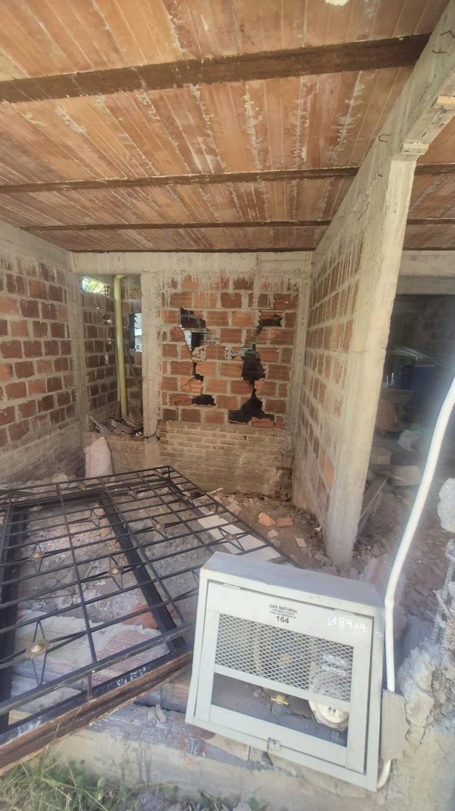
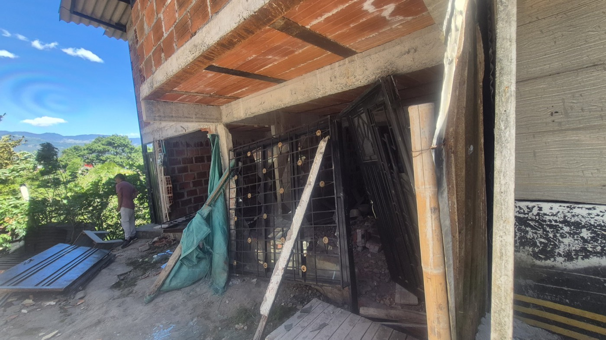

Ayudemos a Mabel Xiomara a empezar de nuevo
El terremoto del 10 de agosto dejó su casa en Circasia (Quindío) inhabitable. La casa se perdió — la deuda con el banco sigue.
 Compartir esta página
Compartir esta página
Lo que pasó
Hola — les escribe Natalia Vallejo Moreno, prima de Mabel Xiomara, junto con familiares y amigos cercanos.
El 10 de agosto de 2026 a las 7:34 de la mañana, el terremoto de magnitud 7,4 que sacudió a Colombia dejó gravemente dañada la casa de Mabel Xiomara en el barrio La Pilastra de Circasia, Quindío. Ella vivía allí con sus tres hijos — Matías (14) y los mellizos Gabriel y Joel (10) — y su pareja, Arlex, el papá de los tres niños.
Es la casa que Mabel Xiomara construyó hace apenas dos años, con sus ahorros y dos créditos de libre inversión. La familia vivía en el segundo piso mientras terminaba de construir el primero. El terremoto partió columnas y muros de ese primer piso. Tras la visita técnica del Consejo Municipal de Gestión del Riesgo de Desastres, la Alcaldía notificó oficialmente a Mabel Xiomara que la vivienda fue declarada NO HABITABLE y tuvo que ser evacuada. No pueden volver — y la Alcaldía les notificó también que no pueden reconstruir en el mismo terreno. La familia tiene que empezar de nuevo en otro lugar.
Los créditos eran de libre inversión, sin seguro contra desastres. Mabel Xiomara debe seguir pagando $1.824.000 cada mes — por una casa en la que ya no puede vivir. La deuda pendiente: $89,4 millones de pesos, en dos créditos de aproximadamente $29 y $60 millones.
Hoy los cinco duermen en un solo cuarto, en la casa de la abuela.
Quién es Mabel Xiomara
Muchos de ustedes la conocen: desde hace más de diez años, cada diciembre, Mabel Xiomara reúne donaciones entre familiares y amigos para darles el aguinaldo a los niños con discapacidad de la fundación INFAC. Lleva más de una década pidiendo por otros. Ahora es nuestro turno de ayudarle a ella — a pagar la deuda que quedó bajo los escombros, para que pueda empezar de cero y construir, sin esa carga, un nuevo hogar para sus hijos.




Desliza para ver más fotos →
Cómo donar
Elige la opción según donde estés. Por Nequi el dinero llega directamente a Mabel Xiomara; las donaciones por PayPal, WeChat y Alipay las recibe su prima Natalia Vallejo, quien transfiere todo lo recaudado a Mabel Xiomara y publica los comprobantes. Cualquier aporte suma; entre todos marcamos la diferencia.
🇨🇴 Colombia — Nequi ›
1. Copia el número · 2. Abre Nequi → «Envía plata» · 3. Pega el número y elige tu monto
Cuenta Nequi a nombre de Mabel Xiomara Moreno Vallejo — el dinero llega directo a ella. Antes de confirmar, Nequi te muestra el nombre de la titular: verifica que sea Mabel Xiomara M. Cada $456.000 cubre una semana de la cuota mensual; $1.824.000, el mes completo.
¿Ya donaste? ¡Mil gracias! 💚 Compartir esta página vale tanto como otra donación.
🌍 Resto del mundo — PayPal (Europa, América, Australia…) ›
Te llevará a la «vaca» de PayPal organizada por Natalia — verás su nombre como organizadora: «Natalia Vallejo». Es correcto.
Donar por PayPalPayPal acepta EUR, USD, GBP, AUD y más. PayPal no puede girar dinero a cuentas colombianas; por eso esta «vaca» la administra Natalia Vallejo, prima de Mabel Xiomara: ella transfiere todo lo recaudado a la cuenta Nequi de Mabel Xiomara y publica los comprobantes aquí.
¿Ya donaste? ¡Mil gracias! 💚 Compartir esta página vale tanto como otra donación.
🇨🇳 China — WeChat / Alipay（微信 · 支付宝）›


¿Estás en China? Escanea el código con WeChat o Alipay (toca para ampliar). Las donaciones las recibe Natalia Vallejo, prima de Mabel Xiomara, quien vive en China — por eso puede recibir por WeChat y Alipay — y transfiere lo recaudado a Colombia, publicando los comprobantes en las actualizaciones.
Al escanear verás el nombre Natalia(***A) en WeChat y *NATALIA en Alipay — si aparece otro nombre, no pagues.
Transparencia
- Las donaciones por Nequi llegan directamente a la cuenta de Mabel Xiomara, sin intermediarios.
- Las donaciones por PayPal, WeChat y Alipay las recibe Natalia Vallejo (su prima, que vive en China), quien transfiere todo lo recaudado a Mabel Xiomara y publica los comprobantes en esta página.
- La deuda son dos créditos de libre inversión con cuotas de $608.000 y $1.216.000 al mes — $1.824.000 en total; saldo conjunto: $89,4 millones.
- ¿Por qué una página propia y no GoFundMe? GoFundMe no puede girar dinero a Colombia y las plataformas cobran comisión — esta página la hizo la familia y no descuenta nada.
- Abajo puedes ver la notificación oficial del Consejo Municipal de Gestión del Riesgo de Desastres: vivienda no habitable — evacuación.
- Publicaremos actualizaciones con comprobantes de cada pago al banco.
- ¿Preguntas? Mostrar correo de contacto
 Notificación oficial del Consejo de Gestión del Riesgo
Notificación oficial del Consejo de Gestión del Riesgo"Vivienda no habitable — evacuación" · solo se cubren la cédula y la dirección · toca para ver
Actualizaciones
¡Arrancamos! Entre familiares y amigos cercanos ya reunimos los primeros $3.182.400. Gracias de corazón — cada aporte nos acerca a que Mabel Xiomara y su familia empiecen de nuevo sin deudas.
Si no puedes donar, comparte
Compartir esta página ayuda igual. Un mensaje tuyo llega donde nosotros no llegamos.
Compartir por WhatsApp Compartir en WeChat（微信） Copiar enlaceMabel Xiomara, Matías, Gabriel, Joel y Arlex te lo agradecen. 💚